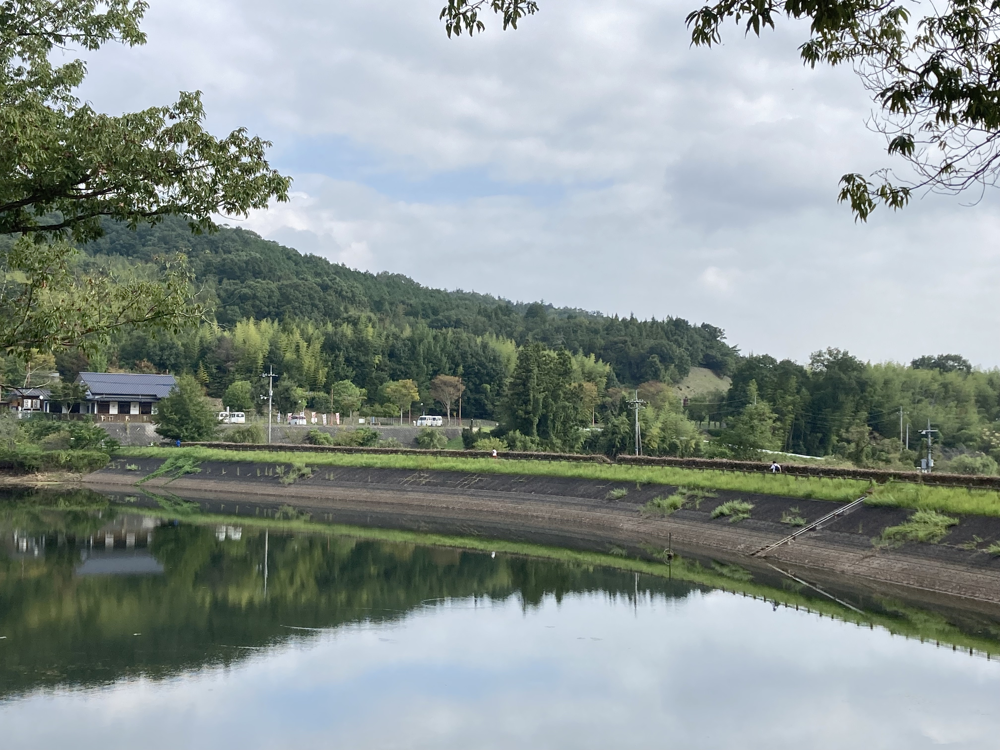

上一章
2017年12月，西条尚未有健身房之时，我都去镜山公园跑步。由于刚去的时候是冬天，我7点起来天还黑，在镜山从天黑跑到天亮。在东京的公园，六点半已经很多人，这里完全没人！到了2018年7月有健身房后，我就只有春天和秋天来跑了。刚来西条晨跑那段时间，还经常遇到吹笛的人，每次都和我打招呼的。现在我带大家跑一下我在镜山公园的跑步线路，一圈1.2公里，中间有饮水机不过我一般就把水放在入口处。

我来了，从家里沿着ブールバール跑过来。家里过来一段也是差不多1.2公里。

从这个入口进去。

看到我在跑吗？

入口这条路是下坡，很漂亮的。
镜山经常有人演奏乐器，还有唱歌的。附近美国半导体公司美光（Micron）也组织过员工来捡垃圾。

弹吉他的人。

这个方向往前跑。

镜山是溜狗的好地方，我有时候会怕，我也在这见过猫。早上骑车在ブールバール在镜山一带还好几次见过大乌龟爬了上来。

树木中的太阳。

这是练习棒球的地方（往回拍）。
儿童游乐场，周末很多人的（往回拍）。

镜山公园一般跑步的人不多，偶尔还是有的。好像就只有我在里面一直跑圈。

差不多到最后一条不到100米的大直路，之后就要准备上坡了。


回头一看我刚才跑的大直路，是不是很漂亮呢？左侧的湖里有鱼，不能喂，有时候还有鸭子。


另一角度看这条路。

这段路最后的这棵树我特别记得，秋季变红叶变得最晚的。

最后一段大概几十米上坡了，挺陡的。

上一张太阳下的。
在公园认识的朋友中西先生。因为每次去都见到就认识了。每次他都会向我挥手微笑，不过从不开口，后来知道原来他嗓子不好。还有另一位久新先生，他一般周六都三代同堂的来，每次见到我都向我说加油，离开西条前我来这里碰他，不过可惜碰不到。我写了一张卡感谢他，我想跟他说虽然是小小的一句话不过对我很有帮助。

我写给久新先生的感谢卡，希望以后还有机会再见送给他。
跑完步，我带你们上山顶逛逛。

如果你听过日本三国，就知道毛利元就，而镜山原来的往就是被毛利元就打败的。当年镜山还发生过激战（关于毛利元就我的有机有去过他的地盘 - 安芸高田）。


登顶看古迹有两条路，大概半小时到，不算难走。


登顶的古迹。


山顶的景色。

看完我们就下山，继续看不同季节的镜山公园。
下一章